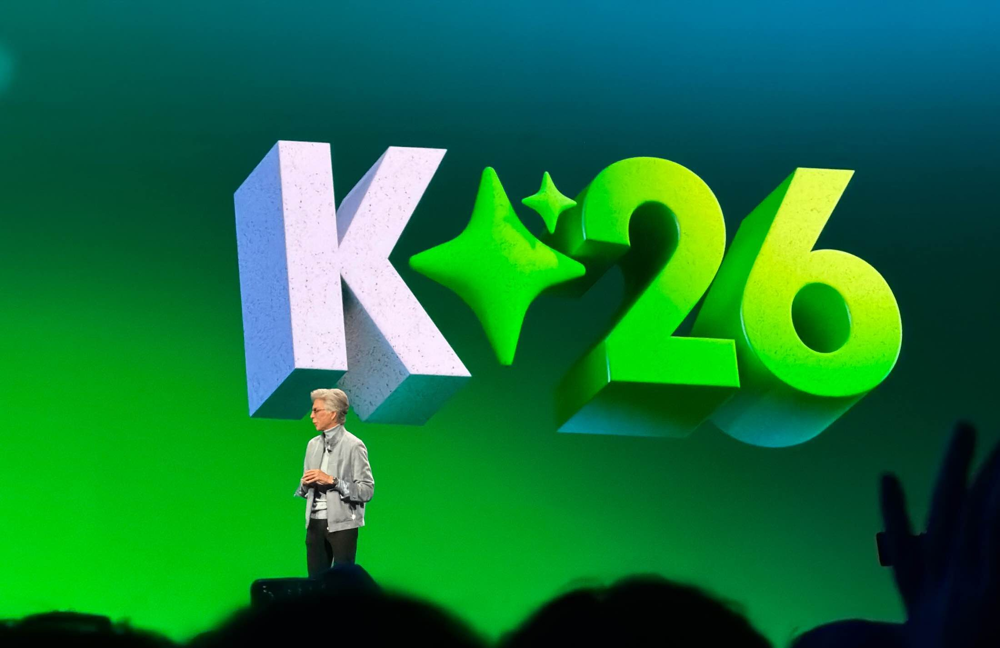
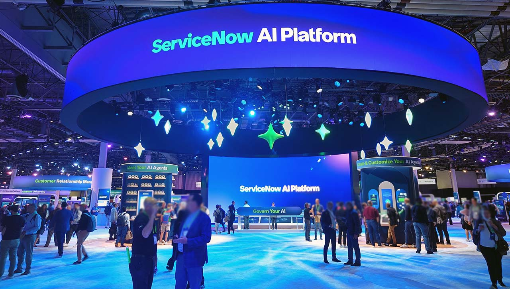

~2022년: 실무진 & 테크 세미나 BEFORE
ITSM 관리자, 시스템 엔지니어들이 시그니처 형광 녹색 셔츠를 입고 핸즈온 랩, 계약 프로세스 개선, SLA 설정을 논의하던 실무 중심 현장.
2025~2026년: 엔터프라이즈 AI 서밋 AFTER
C레벨 경영진 대상. Agentic AI, 자율 에이전트, AI 거버넌스를 앞세워 "모든 비즈니스의 AI 제어판" 지위를 선언한 글로벌 빅테크 쇼케이스.
01. 메인 키노트 무대 연출 & 발표자
형광 셔츠 실무진의 세션 무대 → 거대 3D LED 무대 위의 글로벌 테크 키노트
BEFORE (2022)
THEATER 4 세션

형광 녹색 셔츠와 실무 프로세스 개선 (Theater 4)
Aavenir 등 파트너사와 실무 엔지니어들이 상징적 형광 녹색 셔츠를 입고 무대에 올라 수천 건의 계약 관리, 승인 지연, 수작업 비효율을 줄이는 방안을 도표로 설명하는 실무형 세션 구조.
Aavenir 등 파트너사와 실무 엔지니어들이 상징적 형광 녹색 셔츠를 입고 무대에 올라 수천 건의 계약 관리, 승인 지연, 수작업 비효율을 줄이는 방안을 도표로 설명하는 실무형 세션 구조.
AFTER (2026)
K26 오프닝 키노트

압도적인 입체 3D LED 무대와 C-Suite 기조연설 (K26)
지엽적인 기능 설명 대신 'K26' 3D 메가 비주얼을 배경으로 서비스나우 CEO와 빅테크 리더들이 등장하여 기업 전체의 AI 전환을 선언하는 초대형 글로벌 테크 쇼케이스 연출.
지엽적인 기능 설명 대신 'K26' 3D 메가 비주얼을 배경으로 서비스나우 CEO와 빅테크 리더들이 등장하여 기업 전체의 AI 전환을 선언하는 초대형 글로벌 테크 쇼케이스 연출.
02. 플랫폼 아키텍처 슬라이드 변화
백엔드 기능 모듈 나열형 구조 → "Any Industry, Any AI" 최상위 오케스트레이터 정의
BEFORE (2022)
디지털 비즈니스 플랫폼 다이어그램

ITSM 기능 모듈 중심의 빽빽한 시스템 다이어그램
CRM, ERP 등 하부 시스템을 연결하며 CMDB, 서비스 카탈로그, 프로세스 마이닝 등 내부 엔지니어링 용어와 컴포넌트 목록을 가득 채워 설명하던 과거 아키텍처 장표.
CRM, ERP 등 하부 시스템을 연결하며 CMDB, 서비스 카탈로그, 프로세스 마이닝 등 내부 엔지니어링 용어와 컴포넌트 목록을 가득 채워 설명하던 과거 아키텍처 장표.
AFTER (2025)
ServiceNow AI Platform 계층도

"Any Industry, Any AI" 최상위 통합 OS 선언
복잡한 모듈 이름을 걷어내고 [Any Industry / AI · Data · Workflows / Any Cloud · System]으로 단순화하여 모든 기업의 AI와 데이터를 지휘하는 단 하나의 엔터프라이즈 AI 두뇌로 재정의.
복잡한 모듈 이름을 걷어내고 [Any Industry / AI · Data · Workflows / Any Cloud · System]으로 단순화하여 모든 기업의 AI와 데이터를 지휘하는 단 하나의 엔터프라이즈 AI 두뇌로 재정의.
03. 전시 엑스포 플로어(Expo Floor) 분위기
파트너사 부스 중심의 전시장 → "ServiceNow AI Platform" 돔형 미래 체험관
BEFORE (2022)
전통 엑스포 전시장

원형 로고 사인과 기능별 부스 상담 중심 전시장
파트너사와 벤더들이 각자 부스를 차리고 'Industry Solutions', 'Decision Faster' 등의 문구를 내걸어 1:1 상담과 데모를 진행하던 전통적인 B2B IT 엑스포 풍경.
파트너사와 벤더들이 각자 부스를 차리고 'Industry Solutions', 'Decision Faster' 등의 문구를 내걸어 1:1 상담과 데모를 진행하던 전통적인 B2B IT 엑스포 풍경.
AFTER (2025)
ServiceNow AI Platform 파빌리온

초대형 링 스크린과 "Govern Your AI" 미래 쇼룸
중앙 돔형 서클 아래에 3D 크리스탈 오브제와 미래지향적 블루 조명을 배치하고, "Meet Your AI Agents", "Govern Your AI" 등 자율 에이전트를 직접 체험하는 프리미엄 테크 쇼룸으로 진화.
중앙 돔형 서클 아래에 3D 크리스탈 오브제와 미래지향적 블루 조명을 배치하고, "Meet Your AI Agents", "Govern Your AI" 등 자율 에이전트를 직접 체험하는 프리미엄 테크 쇼룸으로 진화.
04. 오프닝 메시지 및 아젠다 세팅
단순 참석 환영 인사 → "Are you ready for AI agents?" C-Level 화두 제시
BEFORE (2022)
오프닝 웰컴 스크린

활기찬 커뮤니티 중심의 "Welcome Knowledge"
실무자 커뮤니티와 젊은 참가자들의 스톡 이미지를 띄우며 친근함과 사용자 커뮤니티 결속을 강조하던 전형적인 고객 컨퍼런스 오프닝.
실무자 커뮤니티와 젊은 참가자들의 스톡 이미지를 띄우며 친근함과 사용자 커뮤니티 결속을 강조하던 전형적인 고객 컨퍼런스 오프닝.
AFTER (2025)
AI Agents 아젠다 키노트

직관적인 질문: "Are you ready for AI agents?"
화려한 3D 오브제와 함께 경영진(CFO, CEO) 페르소나를 전면에 띄우고, "기업은 자율 AI 에이전트를 맞이할 준비가 되었는가, 서비스나우 플랫폼은 이미 준비되어 있다"는 도발적 아젠다 제시.
화려한 3D 오브제와 함께 경영진(CFO, CEO) 페르소나를 전면에 띄우고, "기업은 자율 AI 에이전트를 맞이할 준비가 되었는가, 서비스나우 플랫폼은 이미 준비되어 있다"는 도발적 아젠다 제시.
05. 핵심 전환 지표 비교표
| 구분 | Before (~2022년) | After (2025~2026년) |
|---|---|---|
| 행사 성격 | ITSM / ITOM 엔지니어링 실무 세미나 | 글로벌 엔터프라이즈 AI 전략 서밋 |
| 참석자 층 | 시스템 관리자, 헬프데스크 실무자 (형광 셔츠 커뮤니티) | CEO, CIO, CDO 등 C-Suite 의사결정권자 |
| 키노트 연사 | 내부 제품 매니저, 고객사 IT 엔지니어 | 빌 맥더멋(CEO) & 젠슨 황(NVIDIA CEO) 단독 대담 |
| 핵심 키워드 | ITIL v3, SLA 단축, 계약 관리, 티켓 자동 배정 | AI Agents, Now Assist, Agentic Business, AI Governance |
| 무대 비주얼 | 다이어그램, 프로세스 플로우차트, UI 캡처 | 초대형 3D 타이포그래피, 상징적 슬로건, 돔형 체험관 |